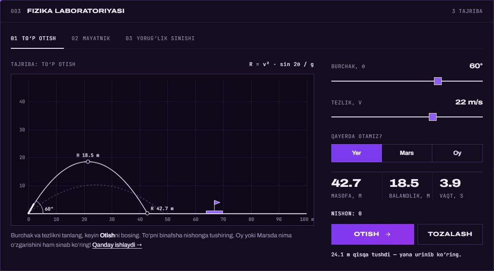

Maqsad
Maktabda o‘tgan fizika formulalarini “jonli” ko‘rmoqchi edim: burchak yoki tezlikni o‘zgartirsangiz, to‘p qanday uchishi darhol ko‘rinsin. Bu loyihada ikkita qiziqishimni — fizika va dasturlashni — birlashtirdim.
Shunchaki chiroyli animatsiya emas: har bir raqam haqiqiy formula bilan hisoblanadi, shuning uchun natijani daftarda tekshirib ko‘rish mumkin.
Uchta tajriba
01 · To‘p otish
Burchak, tezlik va sayyorani (Yer, Mars, Oy) tanlab, to‘pni nishonga tushirasiz. Masofa, balandlik va uchish vaqti formulalar bilan hisoblanadi.
02 · Mayatnik
Ip uzunligi, og‘ish burchagi va sayyorani tanlaysiz — sayt bir to‘liq tebranish vaqtini (davrni) o‘zi o‘lchaydi. Vazifa: davrni berilgan qiymatga keltirish. Eng qizig‘i: katta burchakda o‘lchangan davr maktab formulasidan uzun chiqadi, va sayt nega shundayligini tushuntiradi.
Maktab formulasi T = 2π · √(L / g) (kichik burchaklar uchun) Aniq tenglama θ'' = −(g / L) · sin θ (RK4 usuli bilan yechiladi)
03 · Yorug‘lik sinishi
Nurni havo, suv, shisha va olmos orasidan o‘tkazasiz. Nur manbaini sichqoncha yoki barmoq bilan sudrash mumkin. Zichroq muhitdan chiqishda burchak kritikdan oshsa — to‘liq ichki qaytish yuz beradi: optik tolalar shu hodisada ishlaydi.
Snellius qonuni n₁ · sin θ₁ = n₂ · sin θ₂ Kritik burchak sin θₖ = n₂ / n₁ (faqat n₁ > n₂ bo‘lsa)
To‘p otish qanday ishlaydi
Havo qarshiligini hisobga olmaymiz. Unda to‘pning harakati uchta formula bilan to‘liq tavsiflanadi:
Masofa R = v² · sin 2θ / g Balandlik H = (v · sin θ)² / 2g Vaqt T = 2 · v · sin θ / g
- Hisoblash. Surgichlardan burchak (θ) va tezlik (v) olinadi, sayyoradan esa g. Funksiya R, H va T ni qaytaradi.
- Har bir kadr. Animatsiya davomida to‘pning o‘rni x(t) = v·cosθ·t va y(t) = v·sinθ·t − g·t²/2 bo‘yicha topiladi.
- Metrdan pikselga. Ikkala o‘qda bir xil masshtab ishlatiladi, shuning uchun traektoriya shakli buzilmaydi.
- Chizish. Canvas’da to‘r, yer sathi, nishon, oldingi otishlar izi va to‘pning o‘zi chiziladi.
Qiyinchiliklar va yechimlar
Mayatnik formulasi “yolg‘on gapiradi”
T = 2π√(L/g) faqat kichik burchaklarda aniq. Shuning uchun mayatnik formuladan emas, haqiqiy harakat tenglamasidan har 1/600 soniyada RK4 usuli bilan hisoblanadi. Natija tekshirildi: 60° da o‘lchangan davr 2.15 s, aniq nazariy qiymat 2.153 s.
Nurni barmoq bilan sudrash
Sichqoncha ham, sensorli ekran ham bitta kod bilan ishlashi uchun pointer hodisalari ishlatildi. Barmoqning joyidan burchak atan2 bilan topiladi, sudrash paytida sahifa aylanib ketmasligi uchun esa touch-action: none qo‘yildi.
Oyda to‘p 37 soniya uchadi
Oyda tortishish Yerdagidan 6 marta kuchsiz, shuning uchun haqiqiy vaqtda kutish zerikarli bo‘lardi. Har bir sayyora uchun animatsiya tezlashtiriladi: istalgan otish 2–3 soniyada ko‘rinadi, lekin otishlar orasidagi nisbat to‘g‘riligicha qoladi.
Grafik har xil sayyoraga sig‘ishi kerak
Maydon kengligi eng uzoq otishdan (v²/g) hisoblanadi, to‘r qadami esa 1–2–5–10 kabi “chiroyli” sonlardan tanlanadi. Shuning uchun Yerda 100 m, Oyda 600 m maydon ko‘rinadi.
Telefonda xira chiziqlar
Zamonaviy ekranlarda bitta CSS pikselda bir nechta haqiqiy piksel bor. Canvas o‘lchami ekran zichligiga (devicePixelRatio) ko‘paytiriladi, shunda chiziqlar tiniq chiqadi.
Hamma uchun qulay
Boshqaruv brauzerning o‘z elementlaridan (surgich, radio tugmalar) yasalgan, shuning uchun klaviatura bilan ham ishlaydi. Natija ekran o‘quvchi dasturlarga ovoz bilan aytiladi. Animatsiyani o‘chirib qo‘ygan foydalanuvchilar esa natijani darhol ko‘radi.
Nimani o‘rgandim
- JavaScript’da
Math.singradus emas, radian bilan ishlaydi — avval gradusni radianga o‘tkazish kerak. - Fizika formulasi kodda bitta qator bo‘lishi mumkin — matematika va dasturlash juda yaqin ekan.
requestAnimationFrameyordamida silliq animatsiya qilinadi.